Multi-camera cuts without direction flips: 180-degree line-of-action and screen-order continuity FAQ
Understand in 3 minutes why unguarded camera cuts flip actors left-to-right, and reproduce a mathematically verified 180° half-plane camera gate in 10 minutes.
中文 · Interactive Demo · Measured 7-Card Report
① 📌 Executive Summary
- Crossing the line of action means moving the camera into the opposite 2D half-plane of the subject-to-subject vector. Given directed action vector $\mathbf{u} = \mathbf{p}B - \mathbf{p}A$, the horizontal screen order $x{\text{NDC}}(A) < x{\text{NDC}}(B)$ is invariant across cuts if and only if every camera $\mathbf{c}$ maintains the same sign of the 2D cross product $s(\mathbf{c}) = u_x(c_z - m_z) - u_z(c_x - m_x)$.
- Zero screen-order flips across 121 sampled frames and 4 camera cuts. The
same-sidehalf-plane rig (shot azimuths-18° / -48° / +44° / +12°) preserves $x_{\text{NDC}}(A) < x_{\text{NDC}}(B)$ on all 121 frames (0flips), whereas theaxis-crossedbaseline places Shot 3 (6–9s) at+142°in the opposite half-plane, reversing left-right screen order on all30frames of that shot. - Analytic orthonormal camera-basis projection matches full 4×4 cofactor matrix inversion within
1.22e-15NDC units. Across 8192 shot evaluations on Node CPU, direct orthonormal basis dot-product projection takes2.29 msmedian versus4.18 msfor full 4×4 matrix inversion (1.82×faster). - 59-solid four-camera blocking stage, 13 local acceptance checks. Scene geometry is
synthetic; half-plane signs, NDC projections, and Node CPU timings aremeasured;SynCamMasterneural multi-view diffusion inference, gaze estimation, and automated editing aesthetics arenot_measured.

Daily capability direction check: ICLR 2025 paper SynCamMaster: Synchronizing Multi-Camera Video Generation from Diverse Viewpoints (arXiv:2412.07760) enables synchronized multi-camera video generation conditioned on explicit 6-DoF camera extrinsics. Because generative multi-camera models render whatever camera poses are supplied without enforcing classical continuity editing rules, pre-validating the 180° half-plane invariant in the camera planner is essential before invoking neural rendering. Verified 2026-11-10; this demo implements deterministic half-plane gating and perspective projection without running neural diffusion models.
② 🎯 Architect & Client Q&A
Q1 When should we choose multi-camera video diffusion vs a deterministic 180° continuity gate?
Evaluate multi-camera video diffusion models (SynCamMaster) when you need photorealistic multi-angle appearance synchronization, cloth dynamics, and complex environmental lighting from a set of camera poses.
Use a deterministic 180° half-plane continuity gate to validate and constrain those camera poses before rendering or when building interactive 3D storyboards and technical dialogue explainers—because a neural renderer faithfully reproduces an axis-crossing camera error as a disorienting screen-direction flip.
Q2 Under what constraints is same-side half-plane locking strictly superior?
Same-side half-plane locking is mandatory whenever two interacting subjects, teams, or system nodes must retain consistent left-to-right screen identity and eyeline direction across discrete cuts.
Unconstrained 360° camera orbits work for single-object turntable inspection, but in a two-subject scene, cutting from -48° to +142° swaps the left and right sides of the frame instantly. Crossing the axis is only appropriate during a continuous visible camera move or when deliberate viewer disorientation is intended.
Q3 How does a single 2D cross product guarantee left-to-right screen order from first principles?
Let Actor A at $\mathbf{p}_A$ and Actor B at $\mathbf{p}_B$ define the horizontal action vector $\mathbf{u} = \mathbf{p}_B - \mathbf{p}_A = (u_x, u_z)$ with midpoint $\mathbf{m}$.
A camera at $\mathbf{c}$ looking at $\mathbf{m}$ with world up $\mathbf{up} = (0, 1, 0)$ has horizontal forward vector $\mathbf{f}_{xz} \propto \mathbf{m} - \mathbf{c}$ and horizontal right vector:
$$\mathbf{r}_{xz} \propto \mathbf{f} \times \mathbf{up} = (c_z - m_z, ; -(c_x - m_x))$$
Projecting the vector from A to B onto the camera's right vector yields the exact 2D cross product:
$$\mathbf{u} \cdot \mathbf{r}_{xz} = u_x (c_z - m_z) - u_z (c_x - m_x) = s(\mathbf{c})$$
Whenever $s(\mathbf{c}) > 0$, $(\mathbf{p}B - \mathbf{p}A) \cdot \mathbf{r} > 0$, which guarantees $x{\text{NDC}}(A) < x{\text{NDC}}(B)$ under perspective projection around $\mathbf{m}$. Keeping $s(\mathbf{c}) > 0$ across all shots is therefore both necessary and sufficient to preserve left-to-right screen order.
Q4 How can I reproduce this in 10 minutes?
- Run
npm run devand open/demos/continuity-axis-stage/, initialized at7.20 s(Shot 3,+44°over-the-shoulder cut). - Scrub across
0–12 sinsame-sidemode across all 4 shots: the readout reportshalf-plane +andx_A < x_Bon every frame (at7.20 s,x_A = -0.341, x_B = +0.341). - Switch to
axis-crossedmode at7.20 s(+142°backside camera):half-planeturns-andx_A = +0.312 > x_B = -0.312, flipping Actor A (orange visor) to the right side of the screen. - Enter an unsafe Shot 3 angle such as
135°(outside the[-75°, +75°]safe sector) and clickApply rigto verify atomic rejection and state preservation. - Click
Export cut listto downloadCONTINUITY_CUT_LIST.jsonwith camera extrinsics, half-plane determinant, and NDC coordinates. - Run
npx vitest run tests/continuity-axis.test.ts, then build and runnode scripts/benchmark-continuity-axis.mjsagainst a port 4335 preview server.
③ 🧭 Visual Diagrams
④ 📊 Architect Decision Matrix
| Criterion | Unconstrained 360° Multi-Camera Extrinsics | Prompt-Only Multi-Shot Video Diffusion | SynCamMaster Multi-View Diffusion + Half-Plane Gate |
Standalone Half-Plane Basis Gate (same-side) |
|---|---|---|---|---|
| Left-to-right screen order across cuts | Flips whenever azimuth crosses $\pm 90^\circ$ (30/121 frames here) |
Lacks persistent 3D half-plane constraint; frequent flips | Extrinsic gate guarantees 0 flips + neural view synthesis |
Measured 0/121 flips ($x_A < x_B$ invariant) |
| Pre-render rejection of axis-crossing cuts | None | Discovered only after expensive video generation | Filters invalid camera poses in milliseconds before inference | Atomic rejection of azimuths outside [-75°, +75°] |
| 8192-shot Node CPU projection median | Implementation dependent | Seconds to minutes of GPU diffusion | Gate adds only 2.29 ms CPU overhead |
Analytic basis 2.29 ms vs 4×4 inversion 4.18 ms |
| Arbitrary timeline seeking / reversal | Deterministic (with direction flips) | Context-window dependent | Gate state is exact and reversible | Exact forward/reverse world matrix equality |
| Best architectural role | Single-object 360° turntables | Abstract montage clips | Pre-flight camera verifier for virtual production | Interactive blocking stages & automated shot planners |
Quantitative example: At t = 7.20 s (Shot 3) with actorSeparation = 3.4, cameraDistance = 6.8, and fovDeg = 40°: in same-side mode (+44°), the half-plane determinant is $s(\mathbf{c}) = +16.64 > 0$, yielding x_NDC(A) = -0.3408 < x_NDC(B) = +0.3408. In axis-crossed mode (+142°), $s(\mathbf{c}) = -18.21 < 0$, flipping the screen coordinates to x_NDC(A) = +0.3122 > x_NDC(B) = -0.3122.
⑤ 🧪 New Capability Demo & Benchmark Findings (with 7-Card)
Sealed data records 59 3D solids, 4 camera cuts across 121 sampled frames, and solver equivalence between analytical orthonormal camera-basis projection and full 4×4 cofactor matrix inversion. Maximum NDC coordinate difference across all load tiers is 1.22e-15 (threshold < 1e-12).
| Node CPU Shot Projection Queries | Analytic Camera Basis Median | Full 4×4 Matrix Inversion Median |
|---|---|---|
| 128 | 0.06 ms | 0.26 ms |
| 1024 | 0.29 ms | 0.71 ms |
| 8192 | 2.29 ms | 4.18 ms |
Each load tier runs 7 alternating repetitions after warmup on Node CPU (excluding WebGL rendering). At 8192 shot projections, direct orthonormal basis projection is 1.82× faster than full 4×4 matrix inversion while verifying zero screen-order flips across all 121 frames.
Measured 7-Card Report (EN) · 中文七卡. Scene geometry is synthetic, half-plane and NDC checks plus CPU timings are measured, and SynCamMaster neural multi-view generation, gaze tracking, and narrative editing heuristics are not_measured.
⑥ 🛠️ Architect Checklist
- Define the directed horizontal action vector $\mathbf{u}(t) = \mathbf{p}_B(t) - \mathbf{p}_A(t)$ explicitly for every two-subject sequence.
- Evaluate the 2D half-plane cross product $s(\mathbf{c}) = u_x(c_z - m_z) - u_z(c_x - m_x)$ and enforce a consistent sign across all cuts.
- Constrain same-side camera azimuths to a safe sector (
[-75°, +75°]) away from the $\pm 90^\circ$ collinearity boundary. - Audit projected horizontal screen coordinates $x_{\text{NDC}}(A) < x_{\text{NDC}}(B)$ across every cut boundary (
0inversions). - Reject axis-crossing camera edits (
+135°) atomically while retaining the last valid camera rig. - Use orthonormal camera basis vectors $(\mathbf{r}, \mathbf{u}_{\text{cam}}, \mathbf{f})$ for fast NDC verification and cross-check against 4×4 view-matrix inversion.
- Verify that forward and reverse timestamp scrubbing produce identical actor and camera world matrices.
- Place the deterministic 180° half-plane gate upstream of multi-camera video diffusion models (
SynCamMaster) to prevent wasted GPU renders. - Keep Node CPU projection check timings separate from browser WebGL2 rendering metrics.
- Label unexecuted multi-view diffusion models, gaze estimators, and editorial aesthetics explicitly as
not_measured.
Primary sources: SynCamMaster (arXiv:2412.07760) (ICLR 2025, submitted 2024-12-10) synchronizes open-domain multi-camera video generation from arbitrary 6-DoF camera viewpoints. Verified 2026-11-10; this demo is an original deterministic 180° continuity-axis verifier and does not run neural video diffusion.